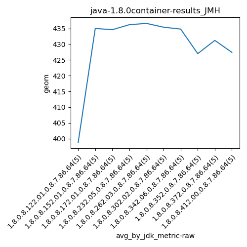
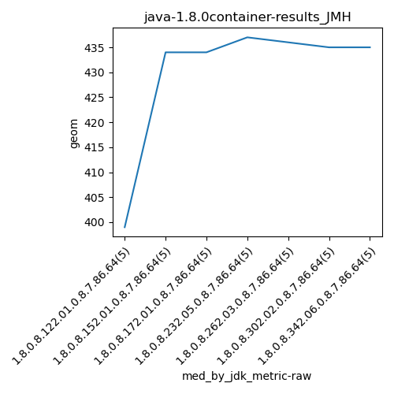
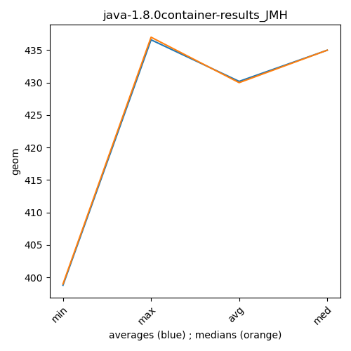

java-1.8.0 JMH
Context at bottom
/home/jvanek/git/benchmarks-in-nested-virtualisation-toolchain/final_results/container_results/container-results_RADARGUNs1
java-1.8.0
JMH
/home/jvanek/git/benchmarks-in-nested-virtualisation-toolchain/final_results/container_results/container-results_DACAPO
java-1.8.0
JMH
/home/jvanek/git/benchmarks-in-nested-virtualisation-toolchain/final_results/container_results/container-results_JMH
java-1.8.0
JMH
container-results_JMH
final score
Expected number of java-1.8.0 JDKs: 7
1st avgmed_alljdks_metric:
/home/jvanek/git/benchmarks-in-nested-virtualisation-toolchain/final_results/result_processing.py /home/jvanek/git/benchmarks-in-nested-virtualisation-toolchain/final_results/container_results/container-results_JMH geom False
values: [397, 401, 399, 400, 397, 432, 433, 434, 438, 438, 434, 434, 435, 434, 436, 437, 438, 434, 437, 435, 436, 439, 436, 436, 436, 435, 437, 434, 436, 435, 435, 435, 435, 436, 433]

Expected number of iterations: 5
final number of values: 35 out of 35
Pass rate: 100.0%
values: (397, 439, 430.2, 435)

** accuracy from all jdks and runs
more is better
MIN: 397
MAX: 439
AVG: 430.2
MED: 435
Relative differences 1:
MIN-MAX: 10.0 %
MIN-AVG: 8.0 %
MIN-MED: 9.0 %
MAX-MIN: -11.0 %
MAX-AVG: -2.0 %
MAX-MED: -1.0 %
AVG-MED: 1.0 %
stored to java-1.8.0.properties. sort | uniq that!
2nd avgmed_by_jdk_metric:
values: [398.8, 435.0, 434.6, 436.2, 436.6, 435.4, 434.8]

values: [399, 434, 434, 437, 436, 435, 435]

values: (398.8, 436.6, 430.19999999999993, 435.0)
values: (399, 437, 430.0, 435)

** accuracy from all jdks where runs were avged
more is better
MIN: 398.8
MAX: 436.6
AVG: 430.19999999999993
MED: 435.0
Relative differences 1:
MIN-MAX: 9.0 %
MIN-AVG: 7.0 %
MIN-MED: 8.0 %
MAX-MIN: -9.0 %
MAX-AVG: -1.0 %
MAX-MED: -0.0 %
AVG-MED: 1.0 %
stored to java-1.8.0.properties. sort | uniq that!
** accuracy from all jdks where runs were medianed
more is better
MIN: 399
MAX: 437
AVG: 430.0
MED: 435
Relative differences 1:
MIN-MAX: 9.0 %
MIN-AVG: 7.0 %
MIN-MED: 8.0 %
MAX-MIN: -10.0 %
MAX-AVG: -2.0 %
MAX-MED: -0.0 %
AVG-MED: 1.0 %
stored to java-1.8.0.properties. sort | uniq that!
/home/jvanek/git/benchmarks-in-nested-virtualisation-toolchain/final_results/container_results/container-results_J2DBENCH
java-1.8.0
JMH
/home/jvanek/git/benchmarks-in-nested-virtualisation-toolchain/final_results/container_results/container-results_RADARGUNs3
java-1.8.0
JMH
/home/jvanek/git/benchmarks-in-nested-virtualisation-toolchain/final_results/container_results/container-results_SPECJBB
java-1.8.0
JMH
pass rates:
container-results_JMH=100.0%
Context:
- container_results
- JMH